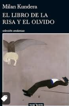
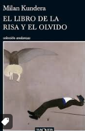

Historia breve del autor
Milan Kundera (1929-2023) fue un destacado escritor, novelista y ensayista checo-francés, nacido en Brno, Checoslovaquia. Estudió literatura y cine en la Academia de Música y Artes Dramáticas de Praga, pero su carrera literaria se desarrolló principalmente en el exilio en Francia, adonde emigró en 1975 tras enfrentarse a la censura del régimen comunista en su país natal.
Kundera es conocido por su estilo único que mezcla narrativa, filosofía y ensayo. Su obra más famosa, "La insoportable levedad del ser" (1984), es un profundo análisis de la condición humana, la libertad, y las complejidades del amor, ambientada en el contexto de la Primavera de Praga. Otros de sus libros notables incluyen "La broma" (1967), "El libro de la risa y el olvido" (1979), y "La inmortalidad" (1990).
A lo largo de su carrera, Kundera exploró temas como la memoria, la identidad, el poder político y la alienación, utilizando un enfoque irónico y crítico hacia la banalidad de la vida moderna y la opresión totalitaria. En 1981, adquirió la ciudadanía francesa y escribió varias de sus últimas obras en francés, reflejando su integración en la cultura francesa.
Mejores libros de Milan Kundera y por deberias de darle una oportunidad
-
"La despedida" (1976)
-
"La broma" (1967)
-
"El libro de la risa y el olvido" (1979)
Por que deberias de darles una oportunidad
-
Ambientada en un balneario, esta novela se centra en las complejidades de las relaciones humanas, el destino y los secretos. Es una obra que combina la ironía con la tragedia, característica del estilo de Kundera.
-
Esta es la primera novela de Kundera, y una crítica mordaz al régimen estalinista. A través de la historia de Ludvik, Kundera explora cómo una simple broma puede destruir vidas en un sistema totalitario. La novela ofrece una visión profunda sobre las consecuencias del poder político y la alienación.
-
Este libro entrelaza varios relatos que exploran la memoria, la historia y la identidad en un contexto de opresión política. Es uno de los libros más personales de Kundera, en el que reflexiona sobre su exilio y la vida bajo un régimen totalitario.
 

Analisis
"La insoportable levedad del ser," escrito por Milan Kundera, es una exploración profunda de temas como el amor, la identidad, la libertad y el eterno retorno de Nietzsche. Ambientada en Checoslovaquia durante la Primavera de Praga, la novela entrelaza las vidas de cuatro personajes principales: Tomás, Teresa, Sabina y Franz.
Kundera introduce la idea de "levedad" como la falta de peso o consecuencia de nuestras elecciones, en contraste con la "gravedad"
o el peso que algunas personas atribuyen a sus decisiones. Tomás vive bajo la premisa de que todo lo que se vive una vez, como si
no se hubiera vivido jamás
(Parte 1, Capítulo 3), lo que lo lleva a una vida de ligereza y desapego. Este enfoque lo protege del dolor,
pero también lo condena a una existencia vacía y superficial.
Por otro lado, Teresa busca en su relación con Tomás un sentido de estabilidad y peso, deseando anclar su vida a la de él
(Parte 2, Capítulo 11).
Su necesidad de profundidad y significado choca con la levedad de Tomás, lo que genera tensiones en su relación. La levedad de Tomás se vuelve insoportable para Teresa,
quien ve en la falta de compromiso y en las infidelidades de Tomás una traición a la profundidad del amor.
Sabina, otra figura central, representa la lucha contra el kitsch y las convenciones sociales. Para Sabina, el "kitsch" es la negación absoluta de la mierda
(Parte 6, Capítulo 5),
es decir, la negación de todo lo desagradable y complicado en la vida. Su rechazo al kitsch refleja su deseo de vivir de manera auténtica, libre de las expectativas sociales, lo que la
lleva a una vida de exilio y soledad.
El concepto nietzscheano del eterno retorno juega un papel crucial en la novela. Kundera pregunta si nuestras acciones tendrían más significado si se repitieran eternamente: Si cada segundo de nuestra
vida se ha de repetir un número infinito de veces, estamos clavados a la eternidad como Jesucristo a la cruz
(Parte 1, Capítulo 2). Este pensamiento desafía a los personajes, y a los lectores, a considerar
el peso y la trascendencia de sus elecciones.
En conjunto,"La insoportable levedad del ser"es una reflexión sobre la naturaleza contradictoria de la existencia humana. A través de las vidas de sus personajes, Kundera explora cómo el peso o la levedad de nuestras decisiones puede definir nuestra experiencia de la vida. La novela nos invita a considerar la libertad y las consecuencias de nuestras acciones, cuestionando si la ligereza, en lugar de ser liberadora, podría ser en realidad insoportablemente vacía.
| Personaje | Frases más bonitas en el libro |
|---|---|
| Tomas | "El amor no se manifiesta en el deseo de acostarse con alguien, sino en el deseo de dormir junto a alguien." |
| Sabina | "La belleza es un mundo traicionado." |
| Teresa | "El amor es el deseo de convertir el sufrimiento en algo que se comparte." |
Links de compra del libro en fisico
- Compra en amazon
- Compra en mercado libre
- Librerías gandhi